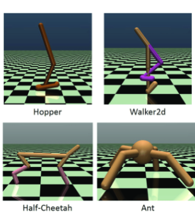

About
Hello Humans 👋 I am a final-year PhD student at Harbin Institute of Technology (HIT), WI Research Group, co-supervised by Prof. Yi Guan and Dr. Jingchi Jiang.
I am currently visting in Autonomous Agents Research Group at the University of Edinburgh (UoE), supervised by Prof. Stefano V. Albrecht.
In research, I develop Reinforcement Learning (RL) algorithms for autonomous robots 🤖
My receipt is to build an end-to-end pipeline of perception and decision-making to realise general-purpose robot autonomy in the wild.
🏥 Hospital Application 🏥 My research [1] [5] has been deployed in the WI Health Management System, reported by WWW.CHINANEWS.COM !!
In life, I 🎾 🏂 🏋 🏃 🏊
Well, I am an amateur "athlete" and a core member of the tennis association at HIT 😹
I used to be a member of the HaiZhiYun Choir 🎶 and the QiDian Art Studio 🎨
I am happy to discuss potential collaboration opportunities, feel free to reach out!
Preprints

|
[7] Causal Prompting Model-based Offline Reinforcement Learning
Xuehui Yu, Yi Guan, Rujia Shen, Chen Tang and Jingchi Jiang*.
International Conference on Autonomous Agents and Multiagent Systems 2023. Under Review.
Keywords: Reinforcement learning, Model-based offline reinforcement learning, Causal, Prompt.
How to complete the online deployment of offline RL agents in low-resource scenarios? A brave attempt in a medical large-scale online system!
A medical benchmark is being built! A decision model can be trained in either supervised learning or offline reinforcement learning in the benchmark.
Partner: Beijing Dnurse Technology Company
|
Selected Publication

|
[1] ARLPE: A Meta Reinforcement Learning Framework for Glucose Regulation in Type 1 Diabetics
Xuehui Yu, Yi Guan, Lian Yan, Shulang Li, Xuelian Fu, Jingchi Jiang*.
Expert Systems With Applications, IF: 8.665.
Keywords: Artificial pancreas, automated insulin treatment, diabetes, meta reinforcement learning, active learning.
How to accomplish fast adaptation in the meta-testing period with limited interaction data? How to address the data distribution mismatch problem? Here are the tricks! :)
Open-source Code / Paper
|

|
[2] Causal Coupled Mechanisms: A Control Method with Cooperation and Competition for Complex System
Xuehui Yu, Jingchi Jiang, Xinmiao Yu, Yi Guan*,Xue Li
The (BIBM) 2022 IEEE International Conference on Bioinformatics and Biomedicine.
Keywords: complex system control, causal reasoning, hierarchical reinforcement learning.
We propose a novel hierarchical reinforcement learning framework for complex biological system control, which can self-supervised learn skills and reuse learned skills.
Paper
|
|
|
[3] PercolationDF: A percolation-based medical diagnosis framework
Jingchi Jiang, Xuehui Yu, Lin Y, Yi Guan*, et al.
Mathematical Biosciences and Engineering, 2022, 19(6): 5832-5849.
Keywords: complex networks; knowledge representation; medical diagnosis; percolation theory
The world model based on cascading theory, which models the physiological domino effect in environment dynamics.
Paper
Partner: Xingyi People's Hospital
|

|
[4] DECAF: An Interpretable Deep Cascading Framework for ICU Mortality Prediction
Jingchi Jiang, Xuehui Yu, Boran Wang, Linjiang Ma, Yi Guan.
Artificial Intelligence in Medicine (2022): 102437.
Paper
|
|

|
[5] Contextual Policy Transfer in Meta-Reinforcement Learning via Active Learning
Jingchi Jiang, Lian Yan, Xuehui Yu and Yi Guan
19th International Conference on Web Information Systems and Applications.
Paper
|

|
[6] Unified Fine-Grained Biomedical Entity Recognition as a Combination of Boundary Detection and Sequence Generation
Xue Li, Yang Yang, Mingchen Ye, Yi Guan, Xuehui Yu, and Jingchi Jiang
Paper
The (BIBM) 2022 IEEE International Conference on Bioinformatics and Biomedicine.
|
Education
|
|
Harbin Institute of Technology - (2019-)
I began my doctoral studies directly following my undergraduate degree, thanks to the postgraduate recommendation scheme. I am currently pursuing a PhD at the Faculty of Computing at Harbin Institute of Technology.
|

|
Harbin Engineering University - (2015-2019)
I earned my bachelor’s degree in Internet of Things Engineering from the College of Computer Science and Technology, Harbin Engineering University in 2019. I was honoured the Outstanding Graduates in 2019.
|
Additional Information
|